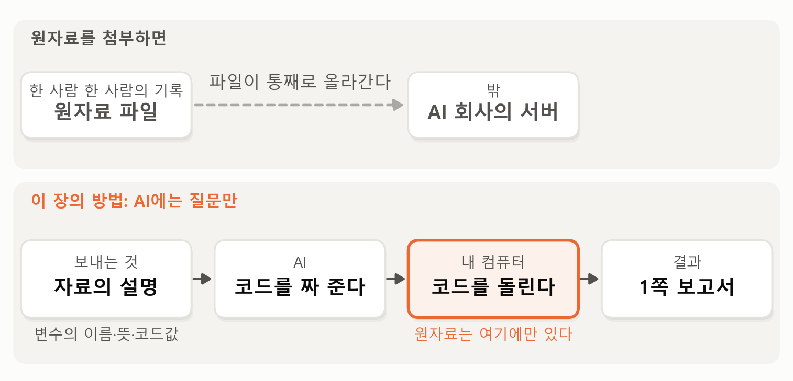
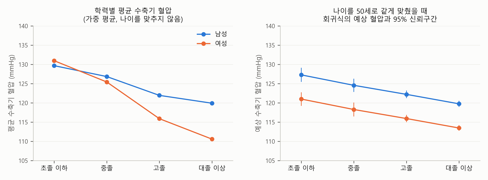

1. 보고서 — 학력이 높을수록 혈압이 낮을까#
이번 장의 주제는 국가 표본조사 자료의 회귀분석입니다. 단순회귀분석 장과 다중회귀분석 장에서 배운 회귀분석을 정부가 해마다 수행하는 대규모 조사 자료에 적용해 봅니다. 이런 조사 자료는 쓰임이 아주 넓습니다. 정부는 이 자료로 국민의 건강 목표를 세우고 그 성과를 점검합니다. 연구자는 소득이나 학력에 따라 건강이 얼마나 다른지, 곧 건강 불평등을 분석합니다. 기업도 같은 자료로 시장을 읽습니다. 건강식품 회사라면 어느 연령대의 어떤 사람들이 어떤 영양소를 덜 먹는지 궁금할 테니까요. 이런 자료는 아파트 거래 기록과 달리 사람을 뽑아서 조사한 자료라서, 회귀분석을 할 때 챙겨야 할 것이 몇 가지 더 있습니다. 이번 장이 그것을 다룹니다.
요즘은 AI에게 데이터를 넣어 주고 분석해 달라고 하면 금방 해 줍니다. 우리는 AI가 만들어 준 보고서를 잘 이해하고, 잘 점검하면 됩니다. AI가 해 주는 것, 잘 이해하기. 그게 우리의 일입니다.
그런데 이 말에는 단서가 붙습니다. AI에게 데이터를 넣어 주는 것 자체가 허락되지 않는 경우가 생각보다 많기 때문입니다. 이번 장의 자료가 바로 그런 자료입니다. 왜 그런지, 그리고 그런 자료로 어떻게 AI의 도움을 받아 분석하는지가 이번 장의 또 하나의 주제입니다. 아래 데이터 소개에서 자세히 이야기하겠습니다.
이번 장의 예시는 학력과 혈압입니다. 학력이 높은 사람은 혈압이 낮을까요? 성별과 나이가 같은 사람끼리 비교해도 그럴까요?
데이터 — 국민건강영양조사 2024#
데이터는 질병관리청이 해마다 수행하는 국민건강영양조사입니다. 국민건강증진법에 따라 1998년에 시작된 조사로, 처음에는 3년마다 하다가 2007년부터는 해마다 연중 조사합니다. 전국에서 뽑은 약 4,800가구의 1세 이상 가구원 모두가 조사 대상입니다.
이 조사가 특별한 것은 한 사람에게서 세 가지를 함께 얻는다는 점입니다. 첫째는 검진입니다. 이동검진차량이 동네로 찾아가 키, 몸무게, 허리둘레, 혈압을 직접 측정하고 피와 소변을 검사합니다. 둘째는 건강설문입니다. 앓고 있는 병, 흡연과 음주, 운동, 학력과 소득 같은 것을 묻습니다. 셋째는 영양조사입니다. 어제 하루 무엇을 먹었는지를 자세히 묻습니다. 그래서 같은 사람의 혈압과 음주 습관과 어제 먹은 소금의 양이 한 줄에 함께 들어 있습니다. 건강보험의 진료 기록은 병원에 간 사람만 환자로 잡지만, 이 조사는 혈압과 혈액을 직접 측정하므로 자기가 고혈압인 줄 모르는 사람까지 찾아낼 수 있습니다.
이번 장에서 쓰는 것은 2024년 조사의 기본 자료(기본DB)로, 2026년 10월 17일에 국민건강영양조사 누리집에서 내려받은 것입니다. 1세 이상 6,997명의 기록이 들어 있고, 변수는 800개가 넘습니다. 이번 장은 이 가운데 19세 이상 성인 5,731명을 분석합니다. 임신 중인 사람(16명)은 혈압이 평소와 달라서 뺐고, 학력이나 혈압이 비어 있는 사람도 뺐습니다. 주로 쓰는 변수는 다섯입니다. 이처럼 여러 사람을 한 시점에 한 번씩 조사한 자료를 횡단면(cross-section) 자료라고 부릅니다. 같은 사람을 여러 해 따라가며 조사한 자료와 달리, 한 장의 단체 사진처럼 그 순간의 모습만 담습니다.
수축기 혈압: 검진에서 측정한 혈압의 큰 숫자. 단위는 mmHg
학력: 초졸 이하, 중졸, 고졸, 대졸 이상의 네 단계
성별과 나이: 나이는 만 나이이고, 80세 이상은 모두 80으로 기록돼 있다
가중치: 이 사람의 답이 모집단(이 조사가 알고 싶은 전체 사람들)의 몇 명을 대표하는지를 나타내는 값. 다음 절의 주제다
혈압을 재면 “120에 80”처럼 숫자 두 개가 나옵니다. 앞의 큰 숫자가 수축기 혈압으로, 심장이 피를 내보내는 순간 혈관이 받는 압력입니다. 단위는 mmHg(수은주 밀리미터)입니다. 뒤의 작은 숫자는 심장이 쉬는 순간의 압력인 이완기 혈압입니다. 국내 진료 지침은 수축기 혈압이 120 미만이면 정상, 140 이상이면 고혈압으로 봅니다. 국민건강영양조사는 검진에서 혈압을 세 번 재고, 두 번째와 세 번째의 평균을 기록합니다. 이번 장의 자료에서 성인의 평균 수축기 혈압은 119.4입니다. 그리고 수축기 140 이상이거나, 이완기 90 이상이거나, 혈압약을 먹는 사람, 곧 고혈압인 사람이 성인의 30.4%입니다. 열에 셋인 셈이죠. 혈압약을 먹는 사람은 성인의 22%인데, 이 사람들의 혈압은 약으로 낮춘 혈압입니다. 보고서는 이들을 그대로 넣었고, 그 판단은 이 장의 뒤에서 따져 봅니다.
이런 자료는 AI에 올리지 않는다#
이 자료는 누구나 무료로 내려받을 수 있지만, 그 전에 거쳐야 하는 절차가 있습니다. 국민건강영양조사 누리집에서 원시자료를 내려받으려면 이름과 소속과 이메일을 등록하고, 「통계자료 이용자 준수사항 이행서약서」에 동의해야 합니다. 서약서의 내용은 세 가지입니다. 통계분석 목적 외에는 쓰지 않는다, 개별 자료로 알게 된 것을 누설하지 않는다, 어기면 통계법에 따라 처벌받고 이후 자료 이용이 제한된다.
이름을 지웠다고는 하지만, 이 자료는 한 사람 한 사람의 혈압, 혈액 검사 결과, 앓는 병, 소득이 담긴 건강 기록입니다. 이런 자료를 외부 AI 서비스에 올리면, 그 자료가 어디에 저장되고 어떻게 쓰이는지를 우리가 통제할 수 없습니다. 서약의 “누설하지 않는다”와 부딪칠 수 있는 일입니다. 그래서 이 책은 이 자료를 AI에 올리지 않기로 했습니다. 이 책의 사이트에서도 자료를 함께 제공하지 않습니다. 이 장을 따라 해 보려면 각자 누리집에서 등록과 서약을 하고 내려받아야 합니다. 받은 파일은 SAS나 SPSS라는 통계 프로그램의 형식인데, 파이썬으로도 바로 읽을 수 있습니다. 자료와 함께 질병관리청이 펴낸 원시자료 이용지침서도 내려받을 수 있습니다. 변수마다 이름과 뜻, 코드값, 그리고 어떤 분석에 어느 가중치를 써야 하는지가 정리된 문서로, 이 자료를 분석하려면 늘 곁에 두어야 합니다.
이것은 이 자료만의 사정이 아닙니다. 오히려 현실에서 분석해야 하는 자료의 상당수가 이런 자료입니다. 회사에서 일한다면 회계 자료, 고객 정보, 개발 중인 제품의 정보는 회사의 기밀입니다. 이런 자료를 외부 AI에게 보여 주고 분석시키는 것은 기밀을 회사 밖으로 내보내는 일이고, 실제로 한 대기업에서 직원들이 사내 자료를 대화형 AI에 붙여 넣은 일이 알려진 뒤 외부 AI의 사용을 제한한 적이 있습니다. 공무원은 업무상 알게 된 비밀을 지켜야 할 법적 의무가 있습니다. 병원의 진료 기록은 법이 특히 엄격하게 보호하는 민감한 개인정보입니다. 연구자가 모은 설문이나 실험 자료도 연구윤리 심의에서 승인받은 방식으로만 다뤄야 하고, 남에게서 받은 자료라면 이용 계약에 “제3자에게 제공하지 않는다”는 조항이 붙어 있는 경우가 많습니다. 데이터 분석이 꼭 필요한 곳일수록, 자료는 함부로 밖에 내보낼 수 없는 것인 경우가 많습니다.
그렇다고 이런 자료에는 AI를 쓰지 말라는 뜻은 아닙니다. 보여 준 자료를 밖으로 내보내거나 학습에 쓰지 않도록, 계약된 기업용 AI나 기관 안에 설치한 AI를 허용하는 곳도 있습니다. 중요한 것은 어떤 AI에게 어떤 자료를 보여 줘도 되는지를 먼저 확인하는 것입니다. 소속 기관의 규정, 자료를 받을 때 동의한 조건이 그 답을 줍니다. 확인할 수 없다면 보여 주지 않는 것이 원칙입니다.
그러면 자료를 보여 줄 수 없을 때는 AI를 어떻게 쓸까요? 이번 장의 보고서가 그 예입니다. 이 질문을 AI에게 맡기되, 자료 대신 자료의 설명을 보냈습니다. 변수의 이름과 뜻, 코드값(이용지침서에 있는 것), 그리고 하고 싶은 분석을 적어 보내고, 그 분석을 하는 파이썬 코드를 받았습니다. 그리고 그 코드를 우리 컴퓨터에서 돌려 1쪽 보고서를 만들었습니다. AI에게 보여 준 것은 자료의 설명과, 코드가 계산해 낸 집계 결과(평균, 회귀 계수 같은 것)뿐이고, 한 사람 한 사람의 기록은 보여 주지 않았습니다. 필요하면 진짜 자료와 생김새만 같은 가짜 자료를 몇 줄 만들어 AI와 함께 코드를 다듬을 수도 있고, 코드를 돌리다 오류가 나면 개인을 알아볼 수 없는 오류 메시지만 AI에게 보여 줄 수도 있습니다(물론 그것도 규정이 허락하는 범위에서).
그림 1-1이 이 방법을 원자료를 첨부하는 경우와 나란히 보여 줍니다.

그림 1-1. 원자료를 첨부하는 경우와, AI에는 자료의 설명만 보내고 코드를 받아 내 컴퓨터에서 돌리는 이 장의 방법.
그림에서 보듯이 원자료를 첨부하면 파일이 통째로 AI 회사의 서버로 올라갑니다. 이 장의 방법에서는 AI에게 자료의 설명만 보내고, AI가 짜 준 코드를 내 컴퓨터에서 돌려 보고서를 만듭니다. 원자료는 내 컴퓨터를 떠나지 않습니다.
여기서 한 가지를 분명히 해 둡시다. AI에게 자료를 건네는 방식은 크게 두 가지입니다. 채팅 창에 파일을 첨부하면, 파일이 통째로 AI 회사의 서버로 올라갑니다. 반면 요즘 늘어나는 에이전트형 AI(내 컴퓨터에서 직접 파일을 열고 코드를 돌리는 AI 도구)는 파일을 올리지 않고 내 컴퓨터에서 분석합니다. 그렇다고 에이전트형이면 안전한 것은 아닙니다. AI가 파일의 몇 줄을 읽어 보거나 코드가 결과를 화면에 출력하면, AI가 본 그것은 대화를 통해 AI 회사로 갑니다. 파일이 올라가지 않았을 뿐, AI가 본 것은 밖으로 나갑니다. 그래서 파일을 올리든 내 컴퓨터에서 읽게 하든, 기억할 원칙은 하나입니다. AI에게는 보여 줘도 되는 것만 보여 준다.
이렇게 하려면 AI가 짜 준 코드를 내 손으로 돌리고, 결과를 읽고, 문제가 생기면 고칠 수 있어야 합니다. 단순회귀분석 장과 다중회귀분석 장의 “직접 해 보기”에서는 파이썬 코드를 읽을 줄 알아야 하는 이유로 “AI도 실수를 하므로 결과를 점검해야 한다”를 들었습니다. 이번 장은 이유를 하나 더 보탭니다. AI에게 보여 줄 수 없는 자료는 내 손으로 분석해야 한다는 것입니다. 파이썬이든 R이든, 통계 프로그램을 스스로 다룰 줄 알아야 하는 이유가 둘이 된 셈입니다. 그래서 이번 장은 회귀분석을 국가 표본조사에 적용하는 장이면서, 동시에 AI에게 보여 줄 수 없는 자료를 AI의 도움을 받아 분석하는 연습의 장이기도 합니다. 그 방법은 이 장 끝의 “직접 해 보기”에서 자세히 다룹니다.
학력이 높을수록 혈압이 낮을까#
자, 이제 질문입니다. 학력이 높은 사람은 혈압이 낮을까요? 성별과 나이가 같은 사람끼리 비교해도 그럴까요?
학력이 건강과 관련이 있다는 이야기는 자주 듣습니다. 교육을 많이 받은 사람은 건강 정보를 더 잘 찾아 쓰고, 직업과 소득도 달라지니까요. 그런데 혈압은 학력 말고도 성별과 나이에 따라 크게 다릅니다. 특히 나이가 들수록 높아집니다. 게다가 이 자료에서는 나이가 많은 사람일수록 학력이 낮습니다. 지금의 70대는 대학에 가기 어려운 시대에 자랐으니까요. 그래서 학력끼리 그냥 비교하면, 학력의 차이인지 나이의 차이인지 알 수 없습니다. 성별과 나이를 같게 맞추고 학력을 비교해야 하는 질문, 곧 다중회귀분석이 필요한 질문입니다.
이 질문의 분석을 AI에게 요청해 받은 코드로 만든 보고서가 아래에 있습니다. 먼저 한 번 읽어 보세요. 가중치, 표본설계, 군집처럼 처음 보는 말이 나와도 괜찮습니다. 그 말들을 이해할 수 있게 만드는 것이 이 장의 일입니다.
AI가 만든 1쪽 보고서
학력이 높을수록 혈압이 낮을까 — 학력, 성별, 나이와 수축기 혈압
분석 대상: 19세 이상 5,731명 (임신부와 학력·혈압 결측 제외, 혈압약 복용자 포함) · 자료: 질병관리청 국민건강영양조사 2024년 기본DB · 모든 수치는 모집단을 대표하도록 가중치를 적용
요약
성별과 나이가 같다면 대졸 이상의 수축기 혈압은 초졸 이하보다 7.5mmHg 낮다(95% 신뢰구간 −9.3 ~ −5.7). 중졸은 −2.7, 고졸은 −5.1로, 학력이 높을수록 낮다.
학력과 나이가 같다면 여성의 수축기 혈압은 남성보다 6.3mmHg 낮다(95% 신뢰구간 −7.1 ~ −5.5).
다만 학력, 성별, 나이가 함께 설명하는 것은 혈압 차이의 21%다(\(R^2\) = 0.212).

그림. 왼쪽: 학력별 가중 평균 수축기 혈압(나이를 맞추지 않음). 오른쪽: 나이를 50세로 같게 맞췄을 때 회귀식의 예상 혈압과 95% 신뢰구간.
회귀 결과
수축기 혈압(mmHg) = 학력 더미 3개 (기준: 초졸 이하) + 여성 + 나이 + 나이²
계수 |
표준오차 |
\(p\)값 |
|
|---|---|---|---|
중졸 |
−2.72 |
1.04 |
0.010 |
고졸 |
−5.07 |
0.82 |
< 0.001 |
대졸 이상 |
−7.53 |
0.90 |
< 0.001 |
여성 |
−6.29 |
0.40 |
< 0.001 |
나이 |
0.024 |
0.082 |
0.77 |
나이² |
0.0026 |
0.0009 |
0.004 |
주: \(n\) = 5,731, \(R^2\) = 0.212, 표준오차는 표본설계(층 27개, 군집 192개)를 반영
해석
계수 읽는 법 — 학력 계수는 성별과 나이가 같은 초졸 이하와 비교한 혈압 차이이고, 여성 계수는 학력과 나이가 같은 남성과 비교한 차이다.
학력 — 학력이 높을수록 혈압이 낮다. 대졸 이상은 초졸 이하보다 7.53mmHg 낮다. 학력만 넣었을 때는 −15.01이었다.
성별 — 학력과 나이가 같다면 여성의 혈압이 남성보다 6.29mmHg 낮다.
나이 — 나이와 나이²로 혈압이 나이가 들수록 점점 가파르게 오르는 곡선을 반영했다. 50세 초졸 이하 남성의 예상 혈압은 127.3이고, 70세에는 134.0이다.
불확실성과 설명력 — 학력과 성별의 계수는 0과 분명히 구별된다. 학력, 성별, 나이가 설명하는 것은 혈압 분산의 21%이고, 나머지는 회귀식 밖에 있다.
한계
상관이지 인과가 아니다. 소득, 직업, 체중, 식생활처럼 학력과 함께 움직이는 요인은 반영되지 않았고, 학력의 차이가 남녀에 따라 다른지는 보지 않았다. 혈압약을 먹는 사람(성인의 22%)의 혈압은 약으로 낮춘 값 그대로 넣었다. 한 해의 횡단면 자료이며, 시설 거주자는 조사 대상에서 빠진다.
보고서 내려받기: PDF(그림 포함) · 원문(.md)
보고서의 다섯 부분#
보고서는 지금까지와 같이 다섯 부분으로 되어 있습니다. 요약, 그림, 회귀 결과, 해석, 그리고 한계입니다. 그 앞의 첫 줄(분석 대상)에도 이번 장에서 처음 보는 말이 하나 있습니다. “모든 수치는 모집단을 대표하도록 가중치를 적용”했다는 것입니다.
요약은 세 줄입니다. 첫 줄은 성별과 나이가 같다면 대졸 이상의 수축기 혈압이 초졸 이하보다 7.5mmHg 낮고, 학력이 높을수록 낮다는 것입니다. 둘째 줄은 학력과 나이가 같다면 여성이 남성보다 6.3mmHg 낮다는 것입니다. 셋째 줄은 학력, 성별, 나이가 함께 설명하는 것은 혈압 차이의 21%라는 것입니다.
그림은 두 패널입니다. 왼쪽 패널은 학력별 평균 수축기 혈압을 남녀로 나눠 그렸습니다. 나이를 맞추지 않은 그대로의 평균입니다. 남녀 모두 학력이 높을수록 가파르게 내려갑니다. 오른쪽 패널은 나이를 50세로 같게 맞췄을 때 회귀식이 예상하는 혈압입니다. 여전히 학력이 높을수록 내려가지만 기울기가 완만해졌고, 남녀의 두 선은 나란합니다. 왼쪽과 오른쪽이 왜 다른지가 이 장의 중요한 물음 가운데 하나입니다.
회귀 결과는 회귀식 하나와 그 계수의 표입니다. 설명변수는 학력, 성별, 나이이고, 나이는 나이²와 함께 들어 있습니다. 표 아래 통계 줄에는 “표준오차는 표본설계(층 27개, 군집 192개)를 반영”이라는 말이 있습니다.
해석은 계수 읽는 법에서 시작해 학력, 성별, 나이를 차례로 읽고, 불확실성과 설명력으로 끝납니다. 한계는 한 줄입니다. 상관이지 인과가 아니라는 것, 소득이나 식생활처럼 학력과 함께 움직이는 요인은 반영하지 않았다는 것, 학력의 차이가 남녀에 따라 다른지는 보지 않았다는 것, 혈압약을 먹는 사람의 혈압을 약으로 낮춘 값 그대로 넣었다는 것, 한 해의 자료라는 것, 시설에 사는 사람은 조사에서 빠진다는 것입니다.
이 장의 진행 순서#
다음 다섯 절 가운데 앞의 세 절이 이 보고서를 설명하고, 뒤의 두 절은 보고서 밖으로 나갑니다.
표본이 모집단을 닮게 — 가중치는 무엇이고 왜 필요한가. 보고서 첫 줄의 “가중치를 적용”과 통계 줄의 “표본설계(층, 군집)를 반영”을 이해한다.
다른 조건이 같다면 — 학력만 넣은 회귀식과 성별, 나이를 함께 넣은 회귀식은 왜 다른가. 계수는 무엇과 무엇을 비교한 숫자인가. 더미 변수와 나이 곡선. 학력 대신 소득으로 보면, 그리고 통계적으로 유의한 것과 실질적으로 큰 것의 차이. 요약의 첫 두 줄, 그림, 회귀 결과 표.
회귀식 밖에 남은 것 — \(R^2\)이 21%라는 것의 뜻, 회귀식에 없던 변수(허리둘레), 평균이 가리는 남녀의 차이(상호작용 하나). 요약의 셋째 줄과 해석의 설명력, 한계 줄의 “남녀에 따라 다른지는 보지 않았다”.
약 먹고 잰 혈압 — 보고서가 한 줄로 적은 판단을 보고서 밖으로 넓혀 보는 이야기. 혈압약을 먹는 사람을 그대로 넣을까, 뺄까. 그리고 혈압약을 먹는 사람의 혈압이 더 높은 이유.
횡단면이 말해 주지 않는 것 — 보고서에 없는 이야기. 나트륨의 계수가 작게 나오는 이유, 해마다 다른 사람을 조사한다는 것. 그리고 이 장을 마치며.
다섯 절을 지나면 이 보고서의 모든 줄을 이해할 수 있고, 같은 자료로 보고서에 없는 질문까지 던져 볼 수 있습니다.